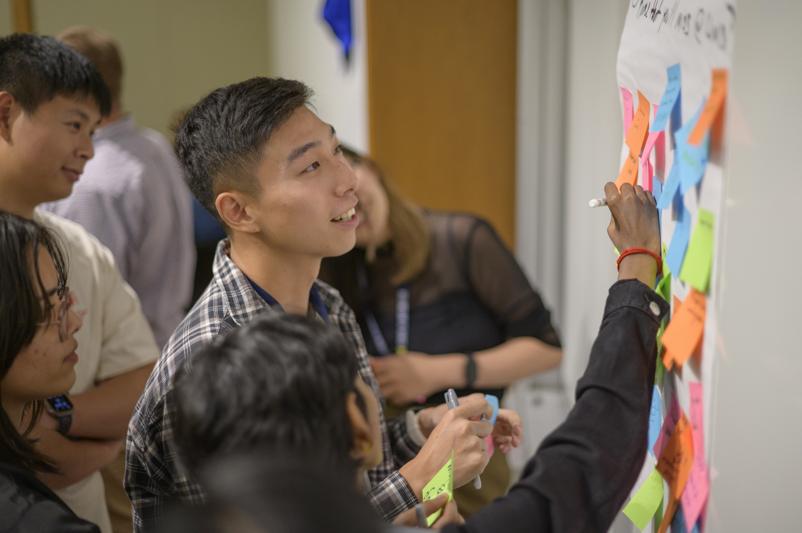

Social Identity Snapshot
Use this diagnostic tool to reflect on self-awareness and positionality before entering community contexts.
View the Social Identity Snapshot
Engaged learning at UMSI is fundamentally different from traditional classroom assignments. You are stepping out of controlled environments and into complex, unscripted ecosystems where technical solutions intersect with human lives, organizational cultures, and real community needs.
The initial phase of a project is rarely about jumping straight into execution. It is about building the foundation for ethical, sustainable engagement. Taking time to reflect on your own positionality, understand your team's skills, and listen to your partner's goals can help establish mutual respect, clear expectations, and honest communication from the beginning.

Before writing code, sketching wireframes, or analyzing datasets, engaged learners should develop social identity awareness and ethical humility. Entering a community or client environment without examining your own assumptions can lead to misaligned expectations or unintended harm.
Preparing thoughtfully allows you to approach partners not as an outside expert fixing a problem, but as a collaborative learner working alongside stakeholders.
Use these resources to reflect on your perspective, examine your assumptions, and better understand how communities and partners can participate in project decisions.
Use this diagnostic tool to reflect on self-awareness and positionality before entering community contexts.
View the Social Identity SnapshotUse this checklist as a quick audit of your personal assumptions and ethical readiness before working with a community or partner.
View the "Check Yourself" Community Engagement ChecklistExplore this framework for understanding different levels of community involvement and decision-making power.
View the IAP2 Spectrum of Public ParticipationPreparing for an engaged learning project also means clarifying the project scope, understanding responsibilities, and making sure that the proposed work is realistic for both your team and your partner. The following resources can help you establish that foundation.

Use this resource for guidance on translating partner needs into realistic project goals.
View the Project Scoping Handout & TermsReview roles, expectations, and commitments for student organization officers and project managers using the resources below.
Review roles, expectations, and commitments for student organization leaders.
View the Student Organization Officer GuideReview roles, expectations, and commitments for student project managers.
View the Project Manager GuideReview the formal agreement outlining responsibilities for student project leads.
View the Project Manager Commitment FormUse this worksheet to clarify the project scope and objectives, team roles, and timeline. The worksheet can be completed by the project team and shared with the client.
View the Project Management WorksheetOnce you have considered the community context, reflected on your assumptions, clarified team roles, and developed an initial project scope, you are ready to begin establishing professional communication and formalizing the partnership.
Continue to Starting Your Experience